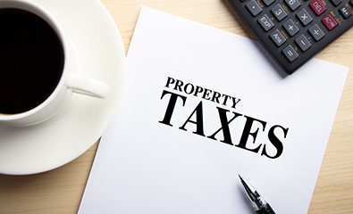

Starting The Conversation About Property Taxes
Happy New Year everyone. Wishing you and your family the very best in 2020 and always.
This blog is a harder one for me to write. The budget process is scheduled to start in a couple of weeks and after the chaos and fall-out from last year’s budget crisis, it is imperative that we are prepared as we head into this year’s budget season. In order to avoid another crisis, we need to have some serious conversations about having a structurally sound budget.
At this time, the conversation is just beginning on the best way to increase county revenue. One preliminary argument is in support of a property tax increase. I understand the struggles of many families, so proposing a tax increase is the last thing I want to do. However, we are running out of other options and I don’t think we should wait until April to have this conversation.
Another reason why a discussion on property taxes is crucial is that raising property taxes is the only way to correct the imbalance created by Metro’s prior decisions to not raise taxes. Because of this decision or lack thereof, there are businesses and residents in the suburbs, mostly with higher incomes, who are benefiting from a reduction in their taxes. More below
Before I dive further into the rationale for increasing property taxes, there are some things I want to address:
- Should we still look for other fees to raise revenues? YES.
- Should we ensure there is no waste in Metro by cutting where necessary without impacting essential services? DEFINITELY.
- Should we provide property tax relief where we can? ABSOLUTELY.
While I think we should raise property taxes, that does not mean I am against these other measures. I do believe that this method, though, will provide sustainable revenue and ironically, push us closer to an equitable system.
Changing Our Tactics: The Problem with Relying Solely on Cost Cutting
Throughout the past few years, Metro has attempted to reduce costs to address the city’s growing needs but this has proven ineffective over the long term. Continuously cutting revenues will ultimately result in cutting essential services and programs. As some of you may recall, one of the steps taken to resolve the $42M deficit earlier this year was a $5M impoundment to Barnes fund. The impact of that impoundment had unintended consequences that greatly affected the most vulnerable citizens of the county.
The Myth about Property Taxes
Many erroneously believe that not increasing property tax rate means a decrease in taxes. This is not always the case. Even with a decrease in tax rate, some residents’ taxes may increase. This happens when the value of a property has gone up. This is why despite the fact that Metro voted not to increase the tax rate, there were several residents in East, North and downtown Nashville that saw an increase.
The Case for a Property Tax Increase
We must consider an increase in property taxes for a number of reasons.
- Increasing property taxes creates a recurring revenue streams. It ensures that essential services continues to be funded and avoids undue strain due to financial crisis.
- Increasing property taxes allows us to consider and enact budgetary changes that will help achieve our goals as a city. Goals such as fully funding MNPS and passing pay raises for our teachers, creating more affordable housing complexes and providing our law enforcement with desperately needed funds and resources.
- Failing to enact a property tax creates an imbalance in what Nashville residents are paying. Those with high property values may actually be paying less in taxes based on where they live. Those who are living closer to downtown often have to pay more.
Fixing an imbalance
Due to a state law that prohibits cities from raising additional revenues through reappraisals, some residents in some parts of the county like Forrest Hills are paying less taxes, while other residents experienced an increase.The unintended consequences of failing to increase property taxes is that those that can afford to pay more are actually paying less. To me, this is not equitable and the only way to right this wrong is by voting to increase property taxes in Nashville. You can read more on this rule with illustrations in the second part of this blog
FAQ About Property Taxes
If property taxes go up, will minimum wage also go up?
Unfortunately no. The minimum wage is regulated by the state. However an increase in property taxes will allow Metro to fulfill cost of living adjustments for its employees. As the third largest employer, this will impact many residents. However, I believe residents not working for Metro deserve wage adjustments. I encourage every resident to contact your state legislators and governor about a minimum wage increase in Tennessee as I will be doing the same.
How do I know that the increased revenues will be used for essential services?
Through its actions over the past couple of weeks, the council has demonstrated its commitment to accountability and oversight. Resolution RS2019-31 was unanimously passed. This resolution recognizes that all Metro residents should have the opportunity to participate in Nashville’s burgeoning economic growth and that Metro will work to enact more equitable practices and policies. The council has also required additional reporting from the Metro Water Department (BL 2019-46) and has asked for cost itemization of capital projects (BL 2019-77). I am therefore confident that my colleagues and I will be prudent in our oversight. I also recommend for residents to follow the budget process and submit their inputs. There will also be an opportunity for public comments in the future.
Does the county provide exemption or assistance with property taxes?
Currently TN State law does not allow exemptions from property taxes for individuals. The only exemptions are for properties owned by not for profit organizations. Certain individuals based on eligibility can seek relief (reimbursement) of property taxes paid. Below are some of the property taxes assistance currently available:
Tax Relief- Tennessee state law provides for property tax relief for low-income elderly and disabled homeowners, as well as disabled veteran homeowners or their surviving spouses. Fore more information-Click here
Tax Freeze– Residents over 65 can apply for and qualify for a property tax freeze- Here
Exemption for Not for profit organizations- Here
In Conclusion
I strongly believe that we cannot be an equitable city if we only come up with generic and short-term solutions. We need to be proactive in our budgetary process so that we can continue to move forward as a city.
If you are interested in understanding the technical details in regards to property taxes, you can read part II of the conversation at this link https://zulfatsuara.com/conversation-about-property-taxes-part-ii-understanding-the-imbalance/. I have broken down the tax rate and the imbalance in property tax payments, as a result of past decisions not to increase property taxes.
As always, I welcome your comments, questions and suggestions.
The conversation about property taxes cannot be limited to one blog. I intend to have multiple post including one compiling answers to your questions. I also plan to attend community meetings and forums to keep the conversation going. The hallmark of being your representative is seeking residents input and I intend to do that throughout this process.
